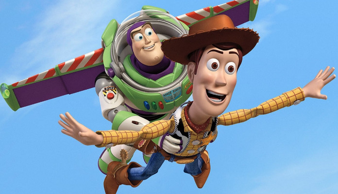

|
SinopsisToy Story comienza con una misión de reconocimiento realizada por un grupo de juguetes, encabezados por el vaquero Woody, para identificar los obsequios recibidos por su propietario, Andy, con motivo de su séptimo cumpleaños. Entre los regalos se encuentra una figura de acción, el guardián espacial Buzz Lightyear, que rápidamente pasa a ser el predilecto del niño. Si bien la mayoría de los juguetes, entre ellos Bo Peep, Mr. Potato Head, Hamm, Slinky y Rex, reciben con entusiasmo a Buzz, Woody busca deshacerse en secreto de él por haberlo sustituido como el muñeco favorito de Andy. Por otra parte, Buzz desconoce su identidad como un juguete y cree que su objetivo es regresar de vuelta a su planeta natal. |
TemáticasLa trama de Toy Story aborda esencialmente el concepto de que «los juguetes cobran vida cuando no los estamos mirando» y disfrutan que los seres humanos los utilicen para jugar,9 aunque cada uno posee su propia personalidad que les confiere cierta naturaleza humana. Una de sus temáticas principales es la amistad entre «Woody y Buzz; un camino que viene del odio/envidia, y pasa por el conocimiento propio y del otro, y por la donación hacia el otro, necesaria para la no autodestrucción. Y una amistad que se refuerza por una misma misión: el ser los juguetes de Andy, que les echa de menos».11 La canción «You've got a friend in me» ahonda en el significado de este elemento, al exponer que «aunque pasen los años, nuestra amistad no morirá, verás que es nuestro destino [porque] tienes un amigo en mí». |
 |